Hao XU (徐昊)
I am a Research Scientist at Adobe. I received my Ph.D. degree from the CSE Department, the Chinese University of Hong Kong (CUHK), supervised by Prof. Chi-Wing FU, Philip. I received my Master's degree at the School of Information and Communication Engineering from the University of Electronic Science and Technology of China (UESTC), supervised by Prof. Guanghui LIU and Prof. Shuaicheng LIU. Before that, I got my Bachelor's degree from Sichuan University (SCU). My research mainly focuses on 3D vision.
News
- 2026.11Join Adobe as a Research Scientist.
- 2026.08Open-CHOIR is accepted to SIGGRAPH Asia 2026.
- 2026.08ATOM is accepted to UIST 2026.
- 2026.02LaS-Comp is accepted to CVPR 2026.
- 2026.01One paper is accepted to IJCV.
- 2026.01One paper is accepted to ICLR 2026.
Publications
2026

Hao Xu, Yilin Liu, Yinqiao Wang, Chi-Wing Fu, Niloy J. Mitra
ACM Transactions on Graphics (ACM TOG), SIGGRAPH Asia, 2026
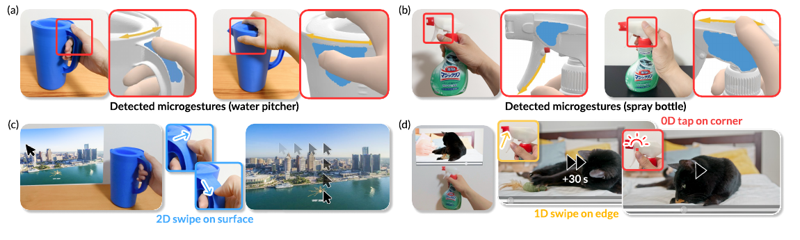
Yinqiao Wang, Hao Xu, Qixuan Liu, Shengdong Zhao, Pheng-Ann Heng, Chi-Wing Fu
ACM Symposium on User Interface Software and Technology (UIST), 2026
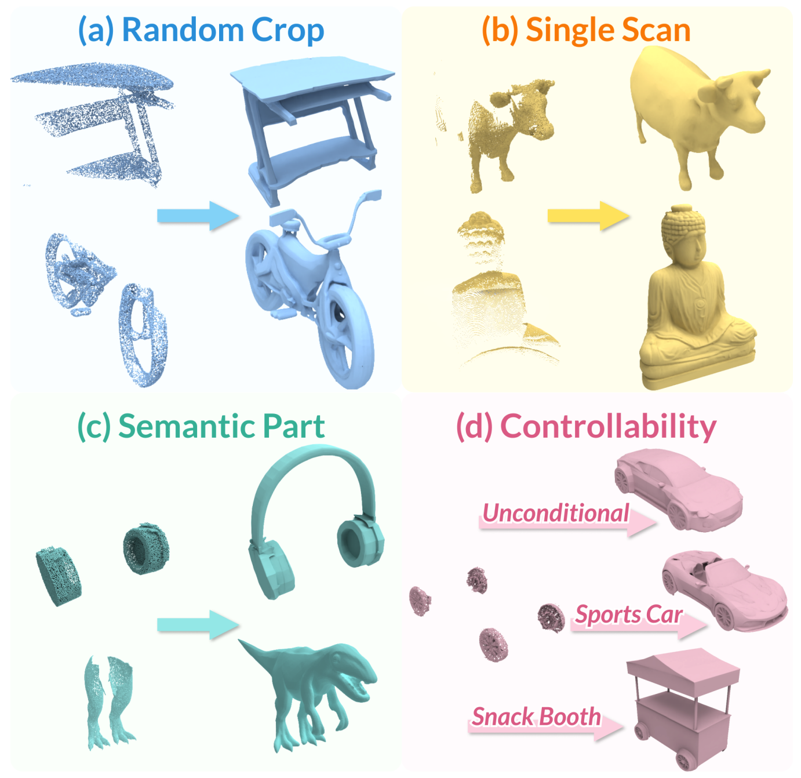
Weilong Yan, Haipeng Li, Hao Xu, Nianjin Ye, Yihao Ai, Shuaicheng Liu, Jingyu Hu
IEEE/CVF Computer Vision and Pattern Recognition Conference (CVPR), 2026
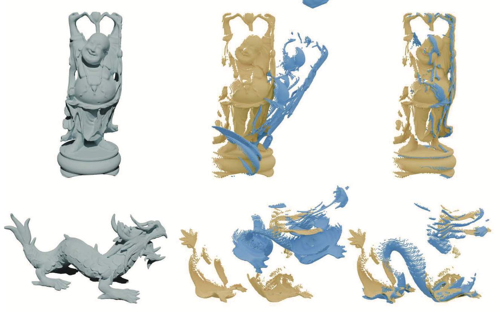
Hao Xu, Guanghui Liu, Bing Zeng, Shuaicheng Liu
International Journal of Computer Vision (IJCV), 2026
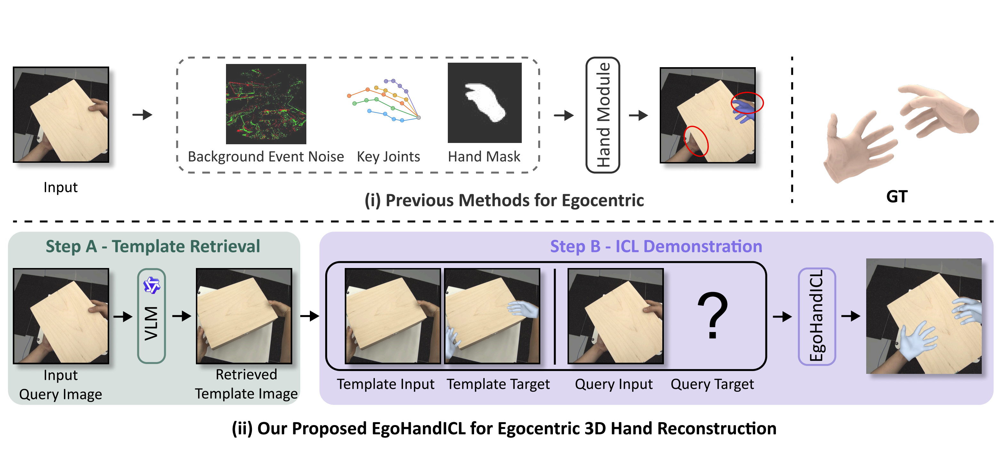
Binzhu Xie*, Shi Qiu*, Sicheng Zhang, Yinqiao Wang, Hao Xu, Muzammal Naseer, Chi-Wing Fu, Pheng-Ann Heng (* Joint first author)
International Conference on Learning Representations (ICLR), 2026
2025
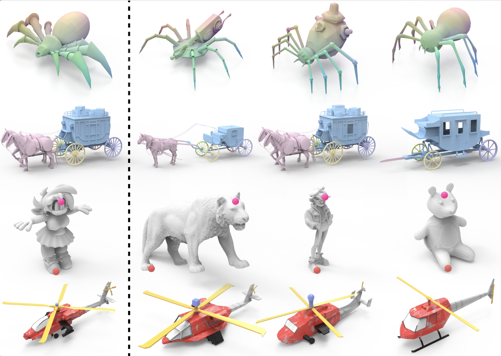
Keyu Du*, Jingyu Hu*, Haipeng Li, Hao Xu, Haibin Huang, Chi-Wing Fu, Shuaicheng Liu (* Joint first author)
ACM SIGGRAPH Asia (Conference), 2025
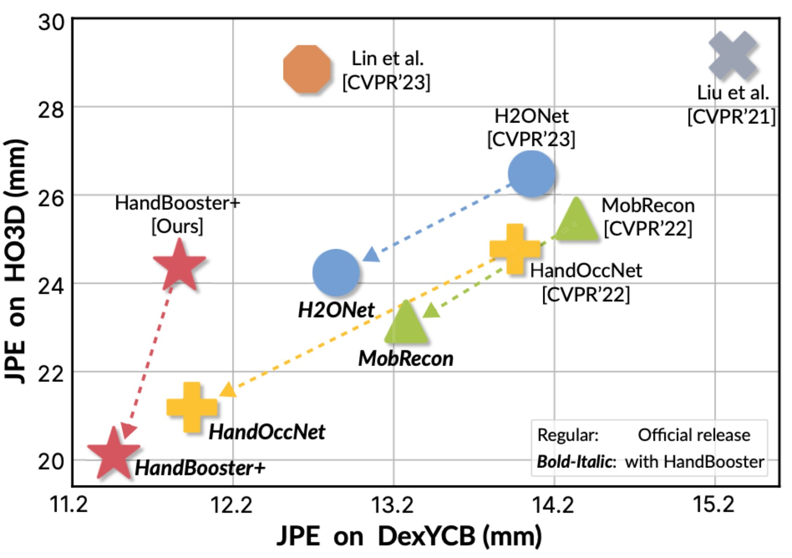
Hao Xu, Haipeng Li, Yinqiao Wang, Shuaicheng Liu, Chi-Wing Fu
IEEE Transactions on Pattern Analysis and Machine Intelligence (T-PAMI), 2025
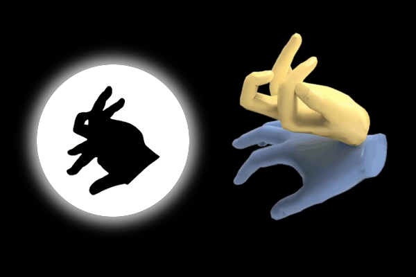
Hao Xu*, Yinqiao Wang*, Niloy J. Mitra, Shuaicheng Liu, Pheng-Ann Heng, Chi-Wing Fu (* Joint first author)
ACM Transactions on Graphics (ACM TOG), vol. 44, no. 4, SIGGRAPH, 2025
Our results are featured on the back cover of the TOG journal for SIGGRAPH 2025.
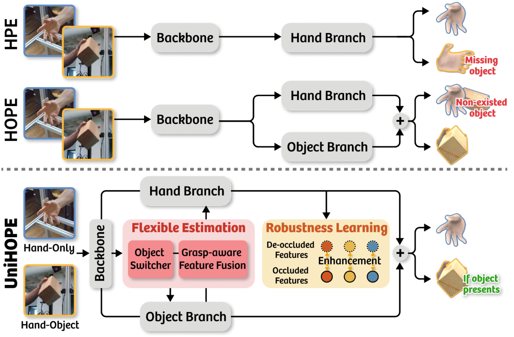
Yinqiao Wang*, Hao Xu*, Pheng-Ann Heng, Chi-Wing Fu (* Joint first author)
IEEE/CVF Computer Vision and Pattern Recognition Conference (CVPR), 2025
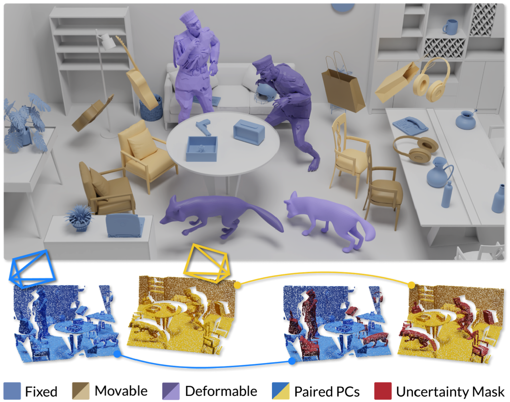
Keyu Du*, Hao Xu*, Haipeng Li, Hong Qu, Chi-Wing Fu, Shuaicheng Liu (* Joint first author)
The 39th Annual AAAI Conference on Artificial Intelligence (AAAI), 2025
2024
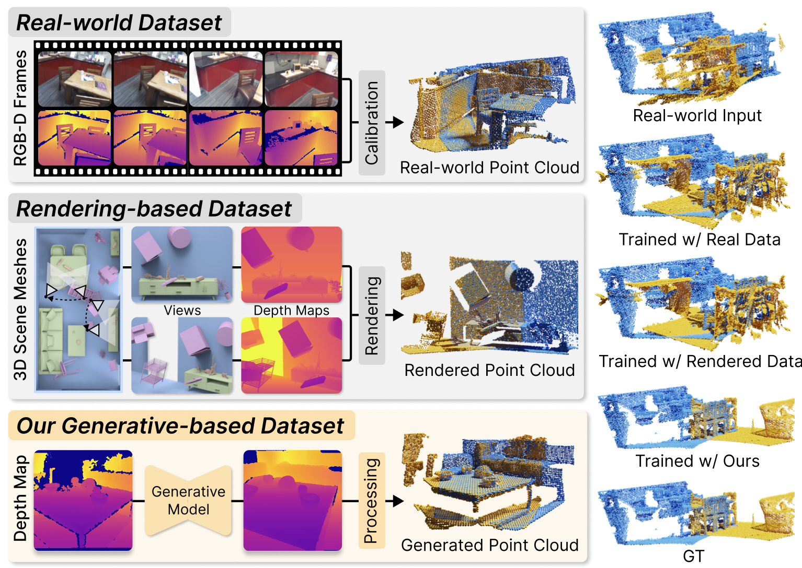
Suyi Chen, Hao Xu, Haipeng Li, Kunming Luo, Guanghui Liu, Chi-Wing Fu, Ping Tan, Shuaicheng Liu
IEEE/CVF European Conference on Computer Vision (ECCV), 2024
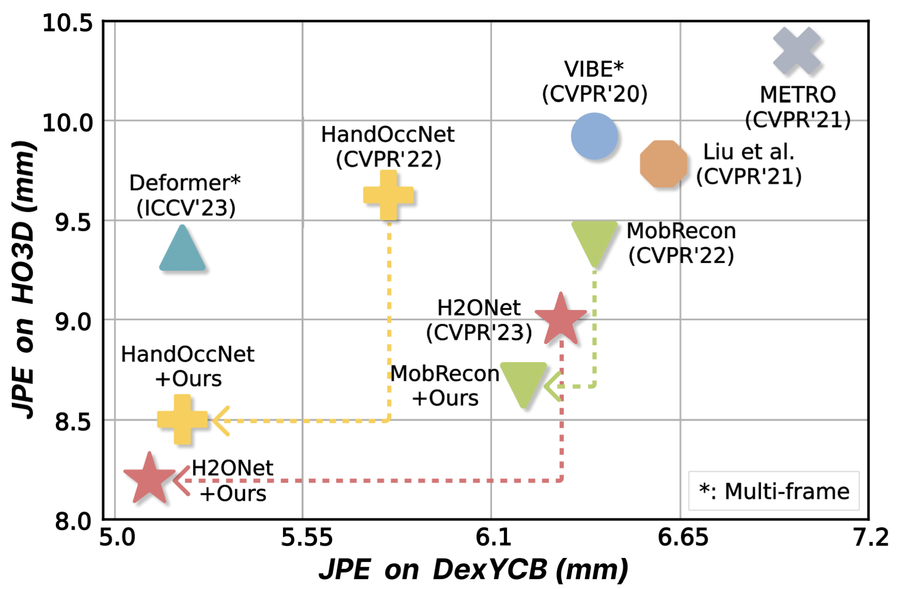
Hao Xu, Haipeng Li, Yinqiao Wang, Shuaicheng Liu, Chi-Wing Fu
IEEE/CVF Computer Vision and Pattern Recognition Conference (CVPR), 2024
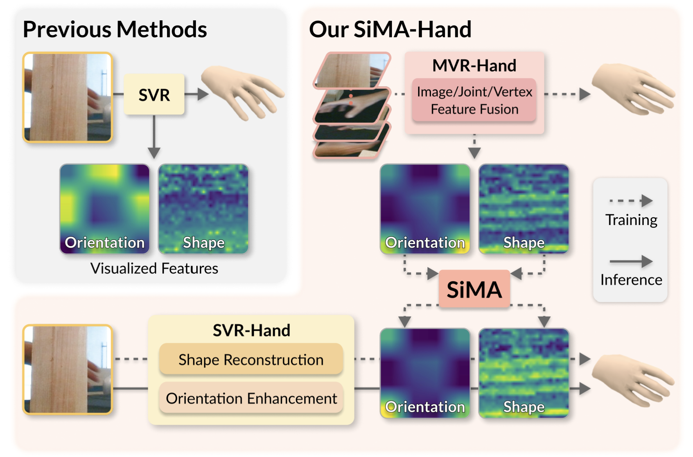
Yinqiao Wang, Hao Xu, Pheng-Ann Heng, Chi-Wing Fu
The 38th Annual AAAI Conference on Artificial Intelligence (AAAI), 2024
2023
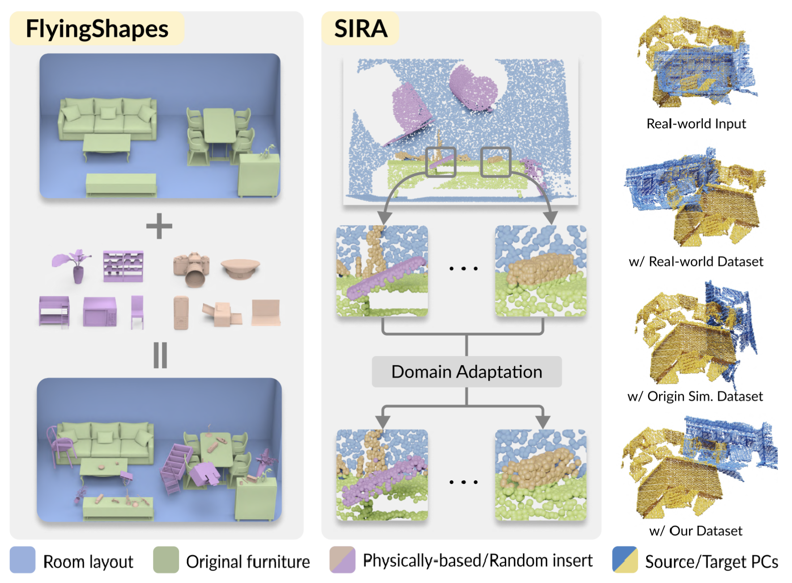
Suyi Chen*, Hao Xu*, Ru Li, Guanghui Liu, Chi-Wing Fu, Shuaicheng Liu (* Joint first author)
IEEE/CVF International Conference on Computer Vision (ICCV), 2023
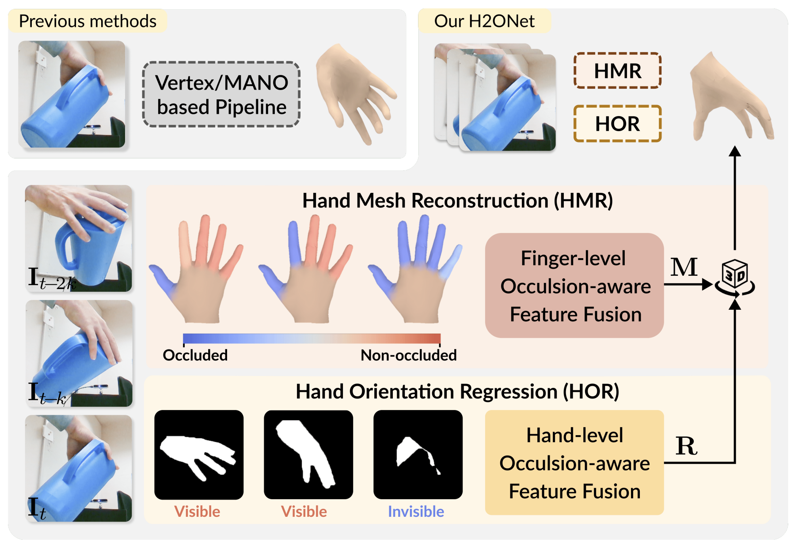
Hao Xu, Tianyu Wang, Xiao Tang, Chi-Wing Fu
IEEE/CVF Computer Vision and Pattern Recognition Conference (CVPR), 2023
2022
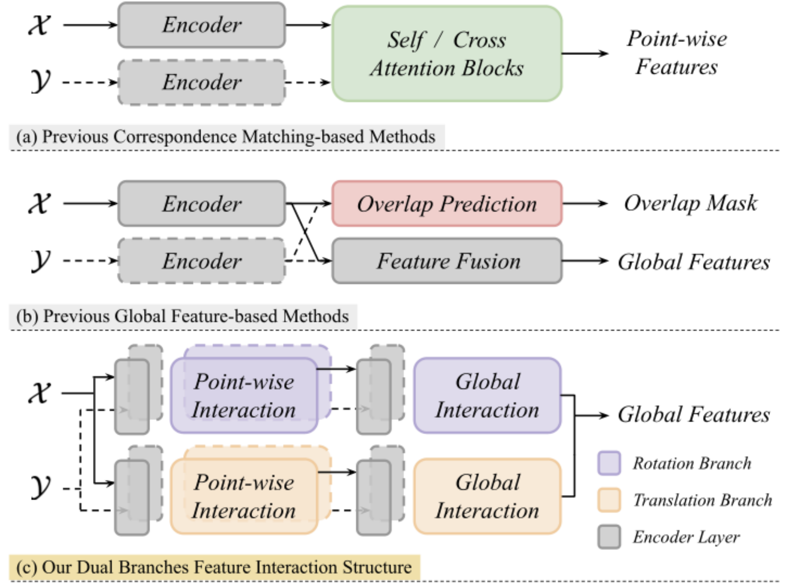
Hao Xu, Nianjin Ye, Guanghui Liu, Bing Zeng, Shuaicheng Liu
The 36th Annual AAAI Conference on Artificial Intelligence (AAAI), 2022
2021
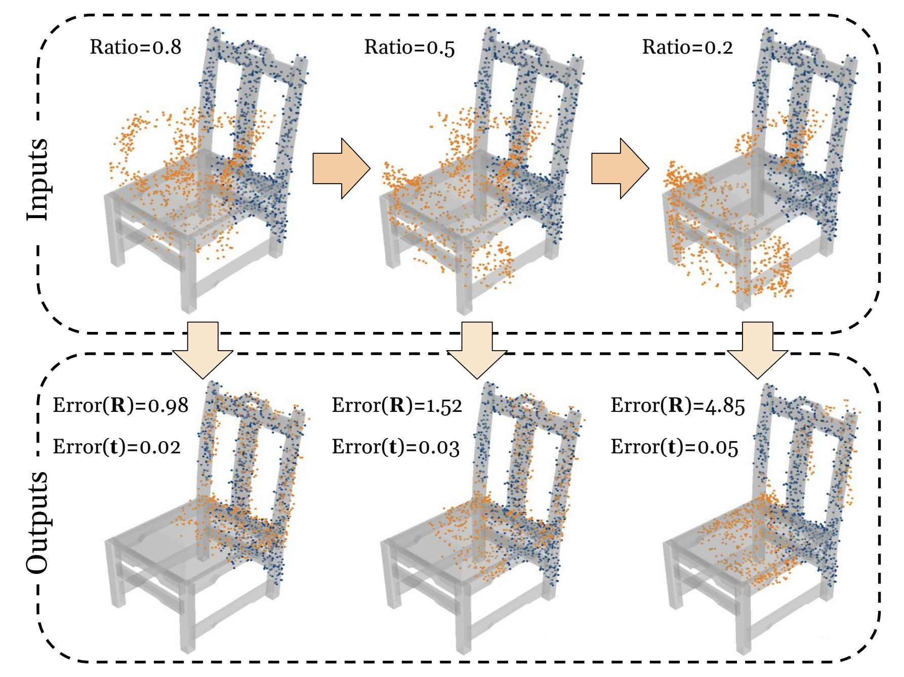
Hao Xu, Shuaicheng Liu, Guangfu Wang, Guanghui Liu, Bing Zeng
IEEE/CVF International Conference on Computer Vision (ICCV), 2021
Visitor Map